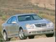

27 июля 2000.
Мое первое полноценное письмо. Удивительно, но это пишу я (Андрей), а не Наташа :)))
Совершенно странное настроение - на работе ничего не хочется делать (по работе) и в то-же время какое-то чувство неудовлетворенности, незаконченности... Наверное, причина в предъистории - я ухожу из моей нынешней конторы, не проработав в ней и года (если быть точным - я здесь пробуду до ухода ровно 8 месяцев без 3 дней :) Началось все с того, что мой приятель (мы вместе работаем) в какое-то утро какого-то дня месяца 3 назад по пути на работу услышал по радио, что IBM проводит Job Fair (ярмарка работы или труда?). Надо заметить, что если IBM что-то проводит, то с размахом :) Говорят, что последний раз подобная ИБМ-овская ярмарка в Торонто было года 3-4 назад, и тогда набрали на работу в ИБМ около 2000 (2 тысяч!!!) человек. На этот раз масштаб еще более впечатляющий - собираются набрать около 5000 человек (зачем им столько?!).
Вобщем, долго сказка сказывается, да недолго дело делается :), но решил я на эту ярмарку съездить (хотя особого желания не было). Побеседовал с первым технарем, отправили на интервью (там-же и тут-же). То есть прошел первый уровень фильтрации :). Проинтервьюировали, назначили следующее интервью уже с конкретным менеджером через 3 дня - прошел второй уровень фильтрации. Это уже серьезно. Прошел 3-е интервью с директором департамента, назначили 4-е - на этот раз с HR - Human Resources manager :))) И, наконец, 5-е интервью - я уже никуда не ездил, встретился с одним из менеджеров в кафе недалеко от моей работы. Это было самое интерестное интервью - большую часть времени я слушал рассказ про ИБМ и все с ним связанное. Все шло довольно скучно до момента, когда он меня спросил - есть вопросы? Я решил, что работа-работой, а вот задать вопрос, мучавший меня последние лет 5 - другой возможности может и не быть :) Вопрос мой был - за каким чертом ИБМ погубил OS/2?! (кто не знает - это лучшая десктопная операционная система всех времен и народов, которую ИБМ фактически уничтожили несколько лет назад :)
Это был переломный момент в интервью! :) Следующие 15 минут я (образно говоря :) утирал горючие слезы этого менеджера (который оказался старым программером, и в том числе работал в группе разработчиков OS/2) :)
Вобщем, после интервью мы расстались если и не лучшими друзьями (сблизившись одним и тем-же горем :))), то уж точно impressed друг-другом :) Как результат - через неделю я получил из ИБМ конверт с подписанным оффером (предложение работы) на весьма впечатляющих условиях. Один только поздравительно-пригласительный бонус (единоразовый - sign-on) в 10 тысяч долларов чего стоит! :)
Не думая ни минуты я подписал оффер и отправил его с курьером назад в ИБМ. Я не слишком уверен, что там все будет так радужно хорошо и весело, но работа в ИБМ - это моя старинная мечта еще со времен окончания универа. Тогда она казалась не просто несбыточной, но даже какой-то пижонистой - как, например, работа в NASA. Кажется - там не работают, там только новости про ракеты и шатлы снимают :))) Сказки, придуманные нами самими, оказываются иногда такими близкими :)
Рассказывать об этом теперь весело (и быстро!), но на самом деле вся эта эпопея тянулась почти 3 месяца - настолько неспешно, что в промежутках между интервью я успевал почти забывать о том, что у меня что-то происходит с ИБМ-ом :)
Так вот, назад к настроению - в ИБМ мне выходить на работу 21 августа (через месяц), и на нынешней работе мне, мягко говоря :), не хочется ничего делать. Тем более, что сижу я сейчас между проектами - старый кончился, а новый еще не начался.
Итак, пробыв в Канаде ровно полтора года, я проработал в двух фирмах, и ухожу в третью. Это не слишком правильно - так быстро скакать, но иногда можно :)
Из событий, не связанных с новой работой - двух-недельный отпуск в Европе (галопом по европам :), приезд в гости Наташиных родителей, легкий финансовый кризис семейного бюджета после оплаты отпуска, приезда родителей и погашении кредита за телевизор-проекционник :) Каждое из этих трех событий не слишком нас напрягло (-бы!), но как-то так случилось, что произошли они все одновременно, что опустило нас практически до пределов нескольких кредитных лимитов (не говоря уже о накоплениях :)
Ассоциативный полет мысли - поездка в Европу...
Хитом программы была неделя в Париже. Просто неделя в Париже... Для кого как, но для нас Париж был мечтой многих лет - наконец-то осуществленной :).
Мы жили на бульваре Монтмартр, ходили по старым улицам старого Парижа, дышали воздухом Парижа, слушали его звуки... Мы просто наслаждались этим городом! Ни в одном городе за всю мою жизнь мне не было так хорошо (за исключением Торонто, который я искренне люблю :) Мы облазили массу достопримечательностей Парижа, и еще большую массу запомнили для следующего отпуска... В конце недели мы просто гуляли по городу - по паркам, улочкам и дворцам :)...
Но... Все хорошее рано или поздно кончается (чаще - раньше, чем позже :). Мы забрали заранее заказанную машину, и направились в Германию - точнее, в Баварию, Мюнхен.
Машина была как машина - Renault Laguna, очень комфортная, 4 цилиндра, совсем немножко мощности - после нашего Pontiac Grand Prix этот Рено ощущается как Жигули :). Разогнать его до 200км/час я так и не смог - даже под горку :) - максимум 199 (половинки деления не хватило) :). Вобщем, ничего особенного и даже слегка скушно за исключением того, что я почти не устал за те 960км от Парижа до Мюнхена (на удивление удобные кресла, и вообще *очень* комфортная машина).
Мюнхен ночью мы не заметили, зато вдоволь насмотрелись на ночные Баварские деревушки по пути в деревушку (городок) под названием Бэд-Тольц (Bad Tolz). Не знаю, что там Бэд (плохой :), на вид очень даже гуд :))) Маленький, тихий, аккуратный и довольно красивый городок. Там живут наши друзья - вместе учились в универе - Ира и Миша. Они там уже 8 лет, двое детей - девочки, говорят по немецки почти как по русски - причем, не только дети :)
Что значит - уйти с туристической тропы - никто не говорит по английски! Кошмар! :) Если-б не Ира с Мишей - совсем пропали-бы мы там :)
На следующий день сменили машину. Это отдельная история - смесь комедии
и трагедии :))) Ну, не то, что-бы трагедии, но результат получился
не слишком радостный. Суть в том, что мы заранее заказали маленький
Мерседес C-150. Но прибыв за машиной обнаружили, что в данный момент этой
марки у них нет, а есть Мерседес-CLK - раза в 2-3 дороже, который нам
согласились отдать за те-же деньги, что и С-150 - то есть практически
даром!

Я тут-же воодушевился в предвкушении погонять на таком шикарном
аппарате, но... Ну почему всегда есть какое-нибудь но?! :( Как только
рентовальщики услышали, куда мы направляемся на их машине (а направлялись
мы в Италию), так тут-же и выдали, что на рентованных (взятых в прокат)
Мерсах и БМВ в Италию (и еще в пару каких-то стран), ехать нельзя,
поскольку эти страны считаются криминально-неблагополучными. Впрочем,
в страны восточной Европы (и в Россию в том числе) на рентованных машинах
(любых!) вообще нельзя ехать. Но это пока было только комедия :) Трагедия
началась после моего вопроса - а что у вас есть с автоматической коробкой
передач кроме Мерсов и БМВ? Надо заметить, что с ручной коробкой я ездил,
но суммарно не более 3 часов :) Помня о том, что в канадском прокате днем
с огнем не сыщешь машин с ручной коробкой, я даже не предполагал
о возможных проблемах. Я был в корне не прав. 99% машин в прокате в Европе
- с ручными коробками :( В итоге, отказавшись от Мерса (кстати, уже
оплаченного!), пошел по соседним конторам, и только в одной из 5 контор
однаружил единственную (!!!) машину с автоматом. Вы будете смеяться - Jeep
Cherokee :( Я джипы (SUV) терпеть не могу! И тут такое...
Да, 2000км на этом танке - незабываемые ощущения... На горных дорогах северной Италии, где нормальные люди повороты проходят притормозив до 120-130км/ч мне приходилось плестись на 70-80 - страшно, знаете-ли, кренится этот танк. Самые незабываемые впечатления были на заправке - когда я увидел, сколько стоит заправить полный бак этого чуда броне-техники. Я в жизни столько за бензин не платил - что-то около 130 канадских долларов (около 90 американских). Не хотел-бы я жить в Европе - уж слишком у них бензин дорогой :) Особенно на джипе - 380км на полном баке (75 литра, 20литров на сотню - и это по хайвею!) - это слишком уж нескромный расход :)
Ну да черт с ним, с этим танком. По крайней мере кондиционер в нем был.
Италия... Шикарные горы, очень красивая природа. Тепло.
Интерестно, что теплеть стало сразу-же как только мы выехали из Австрии - каждые 15 минут прибавлялось по градусу (в танке еще и термометр забортный был - ну прямо как в нормальной машине :) На обратном пути все повторилось с точностью до наоборот - чем ближе к Австрии (а потом и к Баварии), тем холоднее. В конечном счете все закончилось +17С и дождиком (а в Италии было +35 и ни облачка).
Маршрут у нас был: Бавария (с осмотром достопримечательностей), Австрия проездом, Италия - Верона и Венеция, и назад - Австрия, Бавария.
Верона - родина Ромео и Джульеты. Как примерные туристы совершили паломничество к дому Джульеты, сфотографировали балкончик, под которым тосковал Ромео, погуляли, полюбовались на Веронскую Арену, и... И направились в сторону Венеции :)
Маленькая ложка дегтя в большую бочку сладкой Италии - удалившись от туристских троп обнаружили, что нормальное время работы ВСЕХ ресторанов в провинциальной Италии - с 6 до 10 вечера :-О Это был шок. Нет, хуже - это просто какой-то кошмар! К сожалени, если выехать в 9 утра, то кушать начинает хотеться существенно раньше 6 вечера :) Наверное поэтому Италия такая бедная страна - работать там не слишком любят (по крайней мере мне так показалось). Не из-за ресторанов, конечно, а вообще - как общая ситуация. Ну да ладно, мы туда катались не за политико-экономическим анализом :)
Венеция. Это нужно увидеть хотя бы один раз в жизни. Предельно необычное место, местами очень красивое, но необычное везде и всюду. Прогулка на гондоле (кстати, не гондОла, а гондолА :) заняла почетное место в копилке наших впечатлений - причем, не самое последнее место :) По ходу прогулки (проплывки? :), гондольер нам рассказывал о том, что вокруг нас. Дескать, здесь когда-то жил тот-то, а здесь - тот-то. Мы сделали вывод, что из всех знаменитостей, живших в Венеции, самая большая губа-не-дура была у Казановы - у него самый шикарный дом :)
2 дня в Венеции пролетели совершенно незаметно, пора домой. Обратный путь был ничем особым не примечателен за исключением небольшой немецкой особенности :) - после 10 вечера оказались закрытыми ВСЕ встреченные нами заправки! За 45км до дома (Плохого Тольца :) бортовой компьютер сказал - ОЙ! В смысле - бензин кончился :) Еще через 15км стрелка указателя топлива окончательно уперлась в ограничитель, и отказалась даже подрагивать. А до дома еще 30км, ночью под дождем и в совсем не жаркую погоду - около +16С. Мы все (а нас было в машине 4 человека) тут-же начали называть наш танк разными ласковыми словами (джипчик ты наш, трудяга :), и просить его довезти нас до дома, временами нежно поглаживая приборную доску :))) Танк (джипчик? :) смилостивился, напрягся (затянул пояс потуже? :), и на сухом баке довез нас до самого дома. Наутро на заправке (чудо - мы даже до заправки утром смогли доехать!) я выяснил, что топлива оставалось примерно пол-литра, что равняется около 2-3км хода :)
Хорошо кончается то, что хорошо кончается, и наша поездка не исключение. На утро, немного задержавшись в мелкой пробке по пути в аэропорт, мы даже успели на самолет в Торонто :).
И вот наконец - дома! Park&Fly стоянка в аэропорту с нашим заскучавшим и запылившимся ГранПришником, еще 15 минут - и мы дома! :)
В гостях хорошо, а дома - much better! :)))
Кстати, после этого отпуска я окончательно понял, что ощущаю Торонто - как свой дом, который люблю, и без которого скучаю.
Следующее письмо- Письмо 14
{kind=link}
{kind=link}